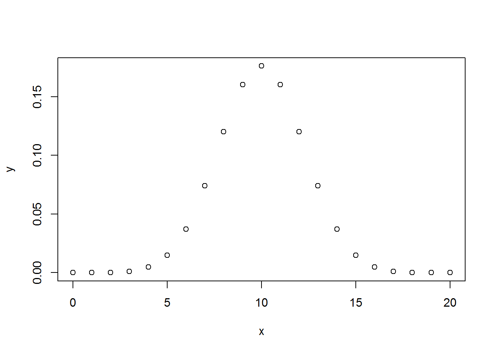
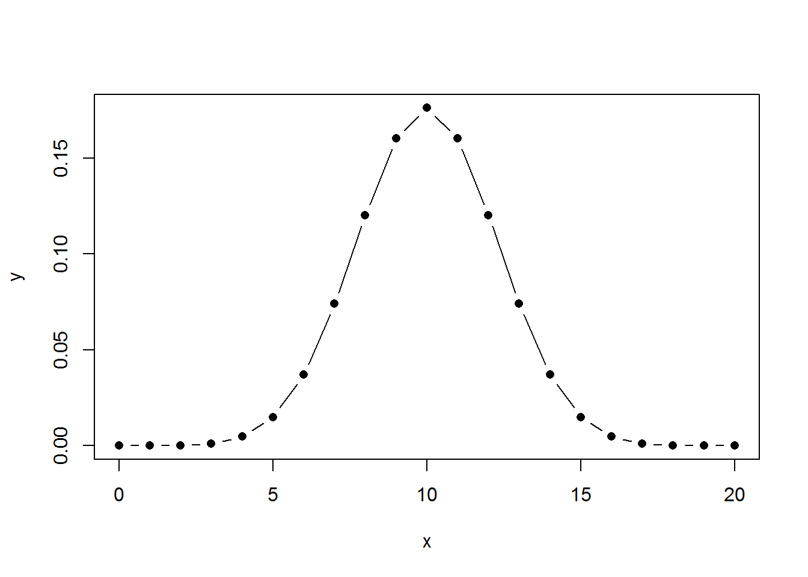
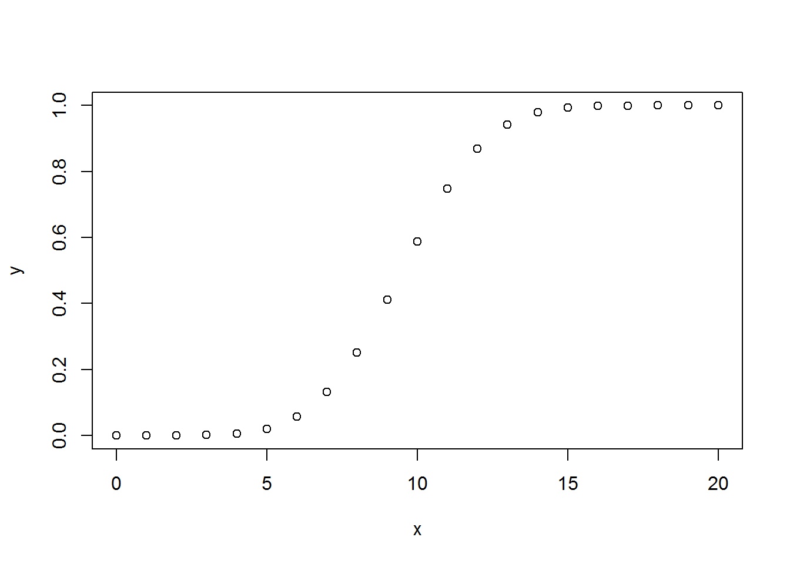
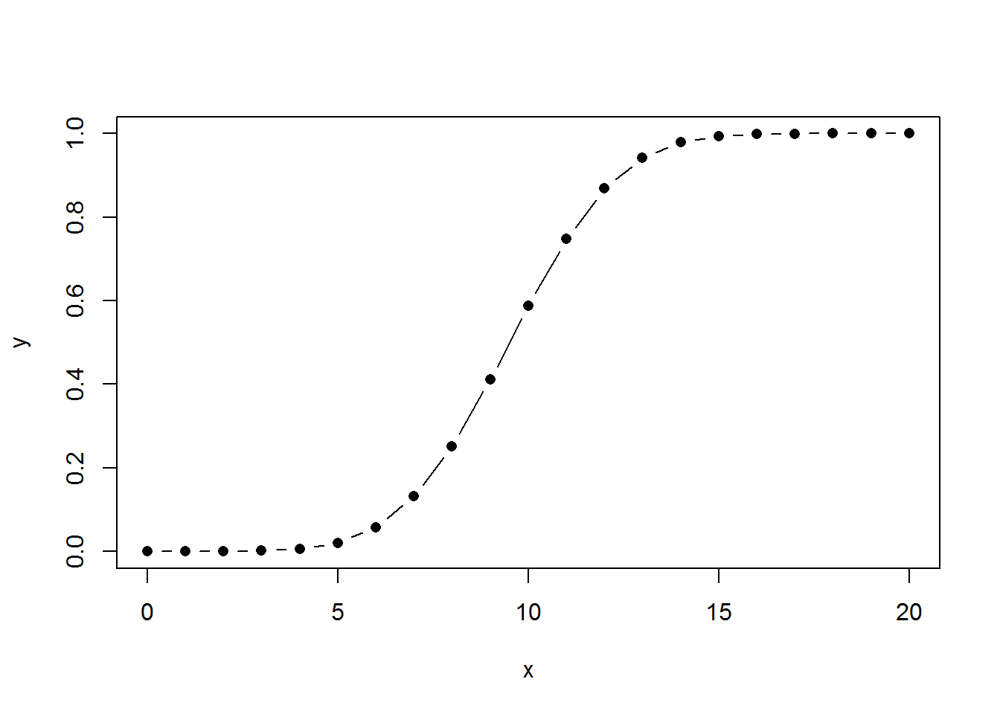
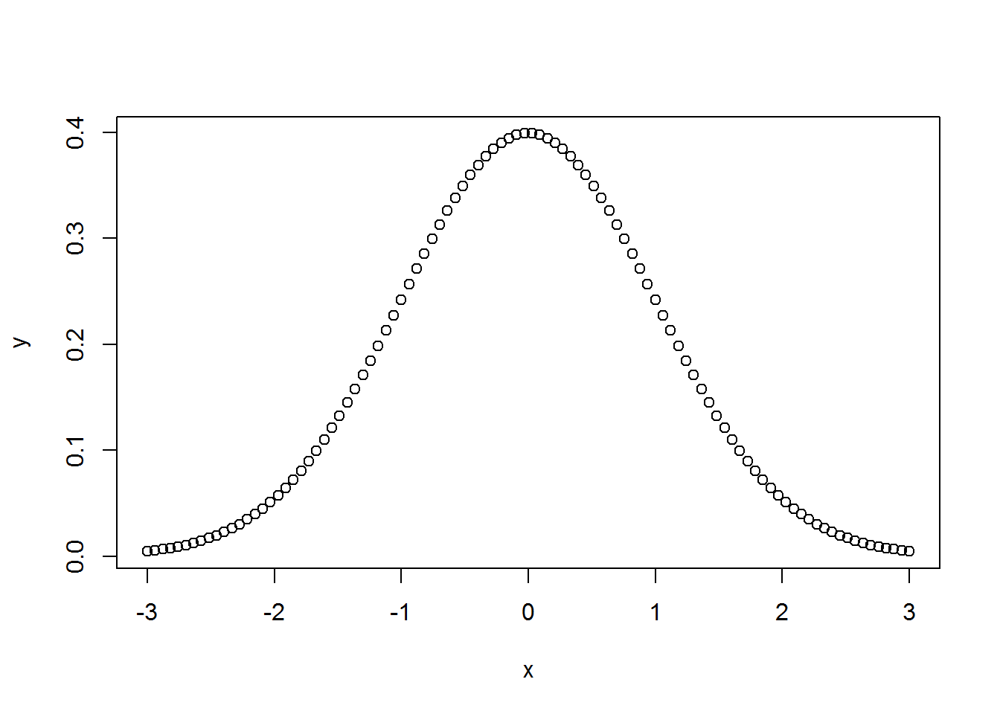
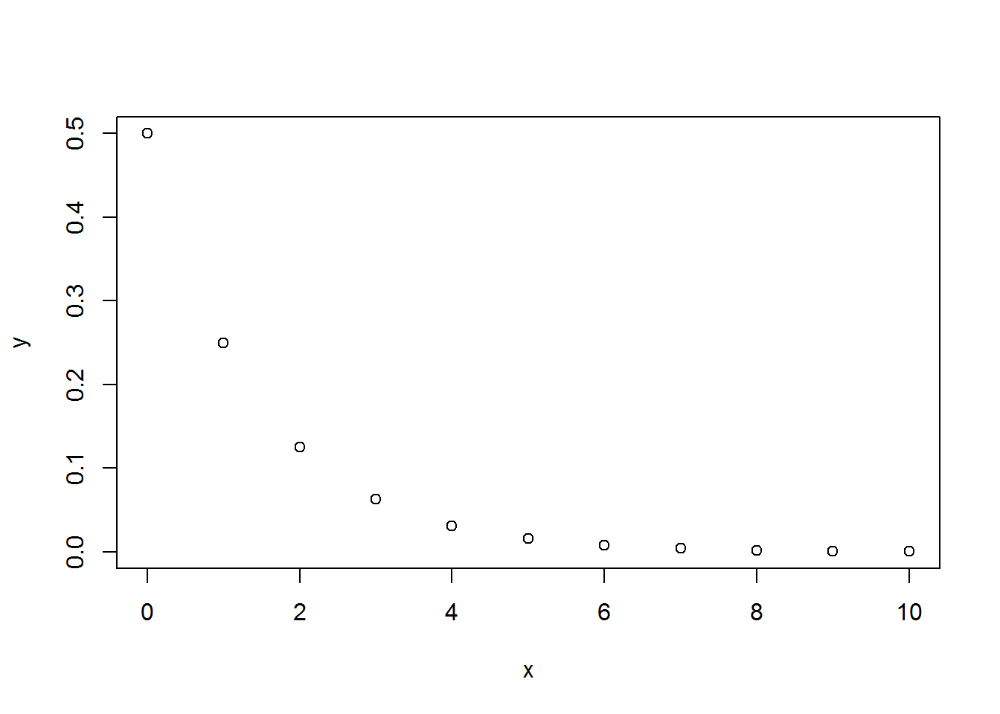
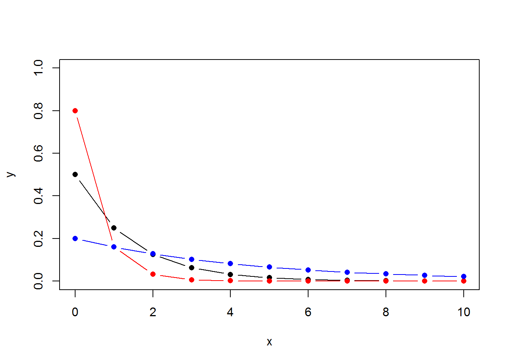
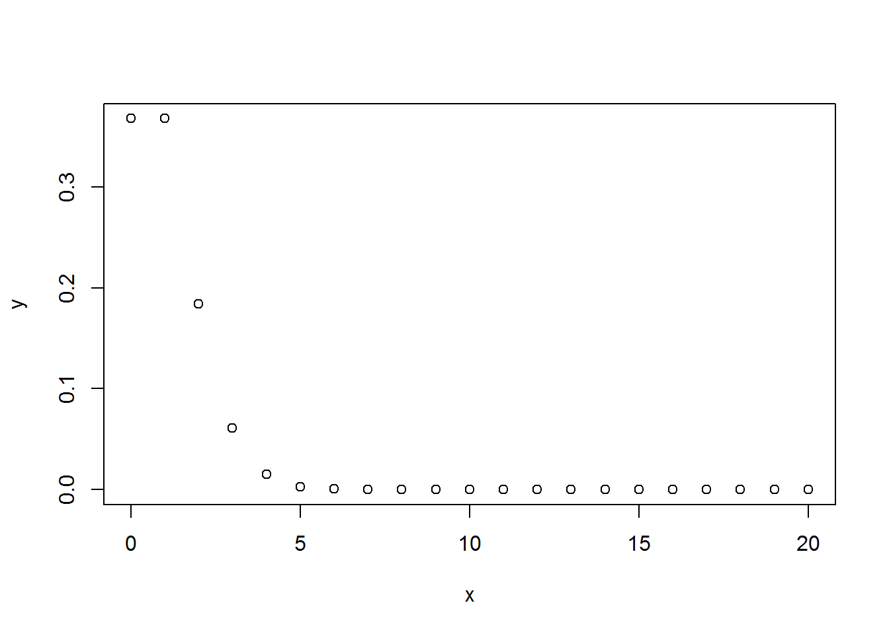
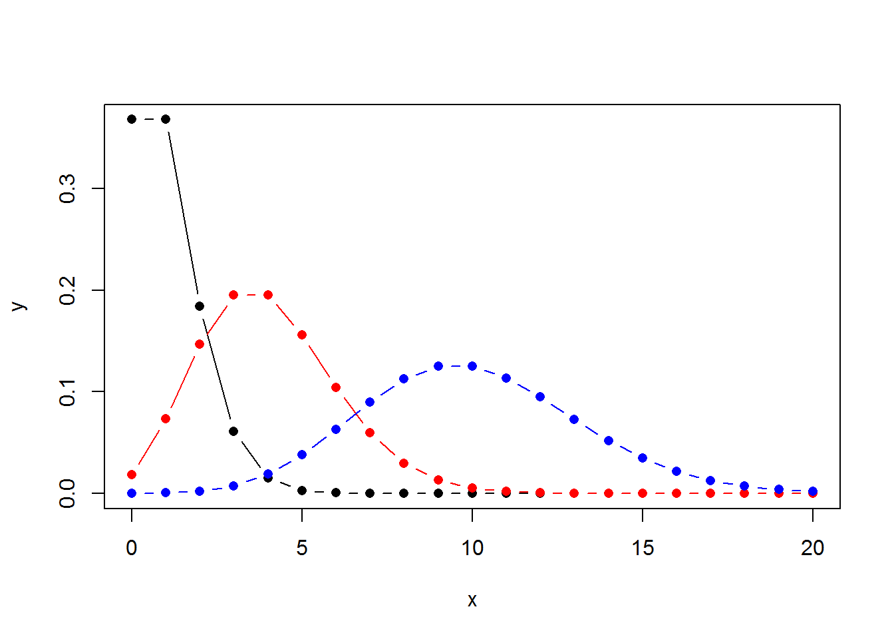

1 Discrete Probability
You can download the original R notebook document for this page HERE.
1.1 Counting the number of combinations
Calculate the number of combinations of n items taken k at a time
choose(3,2)## [1] 3factorial(3)/(factorial(2)*factorial(3-2))## [1] 31.2 Generating combinations
Generate all combinations of n items taken k at a time
combn(1:5,3)## [,1] [,2] [,3] [,4] [,5] [,6] [,7] [,8] [,9] [,10]
## [1,] 1 1 1 1 1 1 2 2 2 3
## [2,] 2 2 2 3 3 4 3 3 4 4
## [3,] 3 4 5 4 5 5 4 5 5 5combn(c("T1","T2","T3","T4","T5"),3)## [,1] [,2] [,3] [,4] [,5] [,6] [,7] [,8] [,9] [,10]
## [1,] "T1" "T1" "T1" "T1" "T1" "T1" "T2" "T2" "T2" "T3"
## [2,] "T2" "T2" "T2" "T3" "T3" "T4" "T3" "T3" "T4" "T4"
## [3,] "T3" "T4" "T5" "T4" "T5" "T5" "T4" "T5" "T5" "T5"1.3 Generating random numbers
Generates one uniform random number
runif(1)## [1] 0.4220169runif(10)## [1] 0.7162645 0.5081791 0.8188029 0.1821157 0.3890650 0.6579844 0.1055432
## [8] 0.1851911 0.3251996 0.1165987runif(10,min = -3,max = 3)## [1] 1.2901691 2.8126237 1.4009891 2.0641653 -0.7511080 0.7868881
## [7] 0.8440551 2.6753751 -1.5227132 -0.9577037Generates one random value from the standard normal distribution
rnorm(10)## [1] 0.29178064 0.88521618 0.71846641 0.05965551 -0.27079271
## [6] -0.01225695 -1.71782356 0.79329173 -0.66076767 -1.15398553rnorm(10,mean = 100,sd = 15)## [1] 58.98743 106.30934 111.28459 96.62909 129.50003 98.29707 115.76973
## [8] 70.71690 119.71344 120.84678rnorm(3,mean = c(-10,0,10),sd = 1)## [1] -10.8766403 0.8104184 9.67555781.4 Generating reproducible random numbers
generate a sequence of random numbers, but you want to reproduce the same sequence every time your program runs
set.seed(100)
runif(10)## [1] 0.30776611 0.25767250 0.55232243 0.05638315 0.46854928 0.48377074
## [7] 0.81240262 0.37032054 0.54655860 0.17026205set.seed(100)
runif(10)## [1] 0.30776611 0.25767250 0.55232243 0.05638315 0.46854928 0.48377074
## [7] 0.81240262 0.37032054 0.54655860 0.170262051.5 Generating a random sample
library(MASS)
df <- Cars93
sample(df$Price, 10)## [1] 61.9 19.5 19.0 19.9 13.5 26.7 18.8 7.4 18.2 31.9sample(df$Manufacturer,10)## [1] Lexus Nissan Lexus Oldsmobile Ford Chevrolet
## [7] Volkswagen Pontiac Hyundai Dodge
## 32 Levels: Acura Audi BMW Buick Cadillac Chevrolet Chrylser ... Volvo1.6 Generating random sequences
set.seed(100)
sample(1:10)## [1] 4 3 5 1 9 6 10 2 8 7sample(1:10,size = 10,replace = FALSE)## [1] 7 8 3 9 5 4 1 2 6 10sample(c("H","T"),size = 10,replace = TRUE)## [1] "T" "T" "T" "T" "H" "H" "T" "T" "T" "H"sample(c("blue","yellow","red","green","purple"),size = 5,replace = FALSE)## [1] "red" "green" "yellow" "purple" "blue"births <- sample(c("boy","girl"),size = 10,replace = TRUE,prob = c(0.513,0.487))
births## [1] "girl" "boy" "girl" "girl" "boy" "boy" "girl" "girl" "girl" "girl"table(births)## births
## boy girl
## 3 7manybirths <- sample(c("boy","girl"),size = 100000,replace = TRUE,prob = c(0.513,0.487))
table(manybirths)## manybirths
## boy girl
## 51659 483411.7 Binomial Distribution
1.7.1 Probability functions
Density function: dbinom(x, size, prob)
Cumulative probability function: pbinom(q, size, prob, lower.tail = TRUE)
dbinom(5,size = 10,prob = 0.5)## [1] 0.2460938dbinom(7,size = 10,prob = 0.5)## [1] 0.1171875pbinom(7,size = 10,prob = 0.5)## [1] 0.9453125pbinom(7,size = 10,prob = 0.5,lower.tail = FALSE)## [1] 0.0546875dbinom(6,size = 10,prob = 0.5) + dbinom(7,size = 10,prob = 0.5)## [1] 0.3222656pbinom(7,size = 10,prob = 0.5) - pbinom(5,size = 10,prob = 0.5)## [1] 0.3222656pbinom(c(5,7),size = 10,prob = 0.5)## [1] 0.6230469 0.9453125diff(pbinom(c(5,7),size = 10,prob = 0.5))## [1] 0.32226561.7.2 Plot probability functions
n <- 20
x <- 0:n
y <- dbinom(x,size = n,prob = 0.5)
plot(x,y)
plot(x,y,type = "b",pch = 16,col="black")
n <- 20
x <- 0:n
y <- pbinom(x,size = n,prob = 0.5)
plot(x,y)
plot(x,y,type = "b",pch = 16,col="black")
x <- seq(from = -3,to = 3,length.out = 100)
y <- dnorm(x)
plot(x,y)
plot(x,y,type = "l",pch = 16,col="black")
1.8 Geometric distribution
If the probability of success on each trial is p, then the probability that the kth trial (out of k trials) is the first success is: x represents the number of failures in a sequence of Bernoulli trials before success occurs.
dgeom(x, prob)
pgeom(x, prob)
dgeom(0,prob = 0.5)## [1] 0.5dgeom(1,prob = 0.5)## [1] 0.25n <- 10
x <- 0:n
y <- dgeom(x,prob = 0.5)
plot(x,y)
plot(x,y,type = "b",pch = 16,col="black",ylim = c(0,1))
y2 <- dgeom(x, prob=0.8)
lines(x,y2,type = "b",pch = 16,col="red")
y3 <- dgeom(x, prob=0.2)
lines(x,y3,type = "b",pch = 16,col="blue")
1.9 Poisson Distribution
During the last 60 days, there were 3 accidents. What’s the probability that there will be more than 3 accidents during the next month?
dpois(x, lambda)
ppois(q, lambda, lower.tail = TRUE)
dpois(0,lambda = 1.5)## [1] 0.2231302dpois(1,lambda = 1.5)## [1] 0.3346952dpois(2,lambda = 1.5)## [1] 0.2510214dpois(3,lambda = 1.5)## [1] 0.12551071- dpois(0,1.5)-dpois(1,1.5)-dpois(2,1.5)-dpois(3,1.5)## [1] 0.06564245ppois(3,lambda = 1.5,lower.tail = FALSE)## [1] 0.06564245n <- 20
x <- 0:n
y <- dpois(x,lambda = 1)
plot(x,y)
plot(x,y,type = "b",pch = 16,col="black")
y2 <- dpois(x,lambda = 4)
lines(x,y2,type = "b",pch = 16,col="red")
y3 <- dpois(x,lambda = 10)
lines(x,y3,type = "b",pch = 16,col="blue")